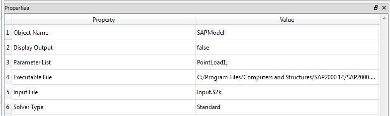
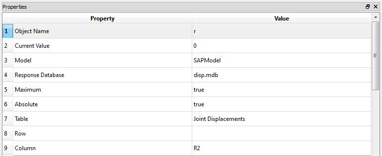

SAP2000
Class Name
Location in Objects Pane
- Models > Model > External Software > SAP2000
Model Description
Model Form
- For users who have SAP2000 installed on the computer, this model allows parameters to be given to SAP2000 and results to be returned to Rt.
DDM sensitivities
Properties
Object Name
- Name of the object in Rt
- Allowable characters are upper-case and lower-case letters, numbers, and underscore (“_”).
- The name is unique and case-sensitive.
Display Output
- Determines whether the model is allowed to print messages to the Output Pane.
Parameter List
- List of the parameters that should be mapped into the SAP2000 model.
Executable List
- Absolute path to the location of the SAP2000 inputfile. Note that the file with $2k format has to be used as the input file, for example:
C:/Input.$2k
Solver Type
- Type of solver that can be either "Standard" or "Advanced".
Output
- This model does not automatically create any response objects.
- Rather, create File Response objects.
- In those objects, specify the name of the SAP2000 and the name of the file where SAP2000 puts the response.
Right-click Menu
Remove
Example

- To etablish a functioning connection between SAP2000 and Rtx and use its results in Rt, the following procedure could be followed:
- It is recommended that the output files of SAP2000 are saved in the same directory as Rt's executive file.
- Make sure that the $2k file has to be registered as the input file
- Properties of the SAP2000 object has to be filled as it has been described in the properties section.
- List of random variables also has to be defined. Note that these variables have to have a consistent naming as the ones in the SAP2000 object
- To extract the results and use them in Rtx analyses, one can create a Database Response like this:

- You can check Database Response for further information on how to fill out the properties section.
- Finally, a proper Limit State Function should be defined to evaluate failure probability and reliability index, using SAP2000 results:
- Before running the analyses, it is recommended to check whether Rtx and SAP2000 are well-connected, using Function Evaluation Analyzer.